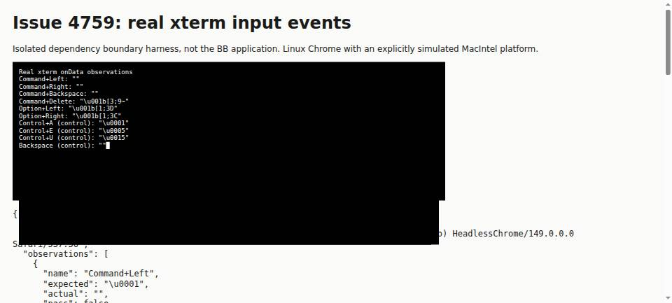

#4759 · Terminal input translation loses macOS Command editing
Verdict: PARTIALLY REPRODUCED · Root-cause confidence: high for the Command-key translation failure.
1. TL;DR
The terminal delegates keyboard translation to its pinned xterm implementation without a macOS editing override. Real xterm input events emit nothing for Command+Left/Right and emit ordinary Backspace input for Command+Backspace. Passing those observed bytes to a real Bash Readline prompt reproduces no movement for Command arrows and deletion of only one character for Command+Backspace. However, Option arrows already move by words in the tested Bash defaults, despite using different bytes from Escape+b/f. The Command-key defect repeated from two clean trusted checkouts; native macOS desktop, zsh, and a mounted BB component were not exercised, so the broader report is only partially reproduced.
2. Claims vs findings
| Behavior | Finding | Evidence |
|---|---|---|
| Command+Left/Right should move to line boundaries. | Verified failure at the input boundary. | Both emit zero bytes. Bash remains at its starting cursor position. |
| Command+Backspace should erase preceding line content. | Verified failure at the input boundary. | Emits byte 127, exactly the same as ordinary Backspace; Bash removes only the final character. |
| Command+forward Delete should erase remaining line content. | Verified mismatch in the isolated harness; native key unverified. | Emits ESC [3;9~, not Ctrl+K. From line start, Bash captures ~Zecho hello world. |
| Option arrows do not use Escape+b/f. | Verified translation difference, not a universal editing defect. | Emit ESC [1;3D and ESC [1;3C. |
| Those Option-arrow bytes are unusable for default shell word movement. | Refuted for Bash 5.2.15; zsh unverified. | Option+Left inserts the marker before world; Option+Right from line start inserts it after echo. |
| Control+A/E/U are usable workarounds. | Verified. | Correct control bytes and corresponding line editing in Readline. |
| Reported native desktop/version-specific behavior. | Unverified directly. | Linux-hosted headless Chrome with explicit MacIntel platform simulation, not a macOS desktop test. |
3. Environment
- Public repository
get-bb/bb, trustedorigin/maincommit94d704e71dca153ef77bb2f2bdf6ddd7f90d4eee. No later terminal change appeared in the final fetch. - Two separate temporary source checkouts, both clean before and after reproduction. Each ran
pnpm install --frozen-lockfile --prefer-offline. - First checkout: Node 22.19.0 on Linux;
pnpm exec turbo run buildcompleted with 63 successful tasks in 1m40.359s. An existing Electron CJS/import.meta warning did not fail the build. - Dependency:
@xterm/xterm 6.1.0-beta.292. Both installed bundles have SHA-25670a3705b46092bdacad42c1f36bb99fe5dca90b92e1bff04b977d88bbb2af67d. - Browser: Linux HeadlessChrome 149.0.0.0 through the BB Browser Automation plugin. The harness deliberately sets
navigator.platform = "MacIntel"before loading xterm and dispatches actual textarea KeyboardEvents. - Shell: GNU Bash 5.2.15, actual PTY/Readline, no profiles or rc files,
INPUTRC=/dev/null, no history, explicit minimal environment. Typed sample content is read as data and never executed. - No BB server, provider session, account, product database, or user runtime data was used. Final browser reproduction used local file pages; a preliminary isolated HTTP harness on port 49159 was abandoned because the browser host differed from the execution container.
4. Minimal reproduction
- Prepare the trusted source and pinned dependencies:
git clone https://github.com/get-bb/bb.git bb-repro cd bb-repro git checkout --detach 94d704e71dca153ef77bb2f2bdf6ddd7f90d4eee pnpm install --frozen-lockfile --prefer-offline pnpm exec turbo run build
- Save the inline keyboard.html and serve.mjs sources into one scratch directory. Serve the harness against that checkout:
node serve.mjs /absolute/path/to/bb-repro 49159
Openhttp://127.0.0.1:49159/in a scratch browser and evaluateawait window.runReproduction(). The page displays the actual emitted bytes. For a browser on another host, transfer the HTML and that checkout'slib/xterm.jsandcss/xterm.cssas siblingterm.js/term.css, then open the HTML as a local file. Do not copy an installed BB runtime or credentials. - Assert the three Command-editing contracts in that page:
const result = await window.runReproduction(); const failures = result.observations.slice(0, 3).filter(observation => !observation.pass); if (failures.length) throw new Error("Command-editing contract failed for " + failures.length + " keys: " + failures.map(observation => observation.name).join(", "));The actual recorded browser-run result is:exitCode: 1 Error: Command-editing contract failed for 3 keys: Command+Left, Command+Right, Command+Backspace
- Save the inline readline.py and first-observations.json. Feed the actual bytes into a fresh Bash PTY:
python3 readline.py first-observations.json
The script types sample text without executing it, sends the observed byte sequence, inserts a markerZ, and captures the edited line. Right/forward-delete tests start at the beginning of the line; other cases start at the end.
| Key | Expected boundary bytes | Actual bytes | Actual edited line |
|---|---|---|---|
| Command+Left | 01 | none | echo hello worldZ |
| Command+Right | 05 | none | Zecho hello world |
| Command+Backspace | 15 | 7f | echo hello worlZ |
| Command+Delete | 0b | 1b 5b 33 3b 39 7e | ~Zecho hello world |
| Option+Left | Alternative word action: 1b 62 | 1b 5b 31 3b 33 44 | echo hello Zworld — word movement works |
| Option+Right | Alternative word action: 1b 66 | 1b 5b 31 3b 33 43 | echoZ hello world — word movement works |
| Control+A | 01 | 01 | Zecho hello world |
| Control+E | 05 | 05 | echo hello worldZ |
| Control+U | 15 | 15 | Z |
The six byte-expectation mismatches are not six verified usability bugs: the two Option mismatches still implement word movement in this Bash environment. The harness is an input-boundary reproduction, not a mounted-component regression test for a future BB fix.

Complete keyboard reproduction test
<!doctype html>
<html lang="en">
<head>
<meta charset="utf-8">
<title>Issue 4759 — xterm input boundary reproduction</title>
<link rel="stylesheet" href="./term.css">
<style>body{font:16px system-ui;margin:24px;background:#fafaf8;color:#1a1a1a}#terminal{width:800px;height:240px;background:#000;padding:12px}pre{white-space:pre-wrap}</style>
<script>Object.defineProperty(navigator, "platform", { configurable: true, value: "MacIntel" });</script>
<script src="./term.js"></script>
</head>
<body>
<h1>Issue 4759: real xterm input events</h1>
<p>Isolated dependency boundary harness, not the BB application. Linux Chrome with an explicitly simulated MacIntel platform.</p>
<div id="terminal"></div>
<pre id="results">Ready. Run window.runReproduction().</pre>
<script>
window.runReproduction = async function () {
const terminal = new Terminal({ allowProposedApi: true, convertEol: true, cursorBlink: true, fontSize: 12, scrollback: 10000 });
terminal.open(document.getElementById("terminal"));
terminal.focus();
const emitted = [];
terminal.onData(data => emitted.push(data));
const textarea = document.querySelector(".xterm-helper-textarea");
const cases = [
{ name: "Command+Left", key: "ArrowLeft", keyCode: 37, metaKey: true, expected: "\u0001" },
{ name: "Command+Right", key: "ArrowRight", keyCode: 39, metaKey: true, expected: "\u0005" },
{ name: "Command+Backspace", key: "Backspace", keyCode: 8, metaKey: true, expected: "\u0015" },
{ name: "Command+Delete", key: "Delete", keyCode: 46, metaKey: true, expected: "\u000b" },
{ name: "Option+Left", key: "ArrowLeft", keyCode: 37, altKey: true, expected: "\u001bb" },
{ name: "Option+Right", key: "ArrowRight", keyCode: 39, altKey: true, expected: "\u001bf" },
{ name: "Control+A (control)", key: "a", keyCode: 65, ctrlKey: true, expected: "\u0001" },
{ name: "Control+E (control)", key: "e", keyCode: 69, ctrlKey: true, expected: "\u0005" },
{ name: "Control+U (control)", key: "u", keyCode: 85, ctrlKey: true, expected: "\u0015" },
{ name: "Backspace (control)", key: "Backspace", keyCode: 8, expected: "\u007f" }
];
const observations = [];
for (const testCase of cases) {
emitted.length = 0;
const { name, expected, ...keyboard } = testCase;
textarea.dispatchEvent(new KeyboardEvent("keydown", { bubbles: true, cancelable: true, ...keyboard }));
textarea.dispatchEvent(new KeyboardEvent("keyup", { bubbles: true, cancelable: true, ...keyboard }));
const actual = emitted.join("");
observations.push({ name, expected, actual, pass: actual === expected, bytes: Array.from(actual, character => character.charCodeAt(0)) });
}
const result = { platform: navigator.platform, userAgent: navigator.userAgent, observations, failed: observations.filter(observation => !observation.pass).length };
document.getElementById("results").textContent = JSON.stringify(result, null, 2);
terminal.write("Real xterm onData observations\r\n" + observations.map(observation => `${observation.name}: ${JSON.stringify(observation.actual)}`).join("\r\n"));
return result;
};
</script>
</body>
</html>
5. Root cause
The keyboard translation policy lives at the frontend terminal boundary. The constructor supplies presentation and rendering options but no macOS editing translation. The whole trusted terminal module contains no attachCustomKeyEventHandler call. Its dependency's installed keyboard evaluator exits the arrow-key case when Meta is pressed, while its Backspace case selects DEL unless Control is pressed, without examining Meta.
terminal = new Terminal({
allowProposedApi: TERMINAL_ALLOW_PROPOSED_API,
convertEol: true,
cursorBlink: true,
fontFamily: readTerminalFontFamily(),
fontSize: 12,
linkHandler: osc8LinkHandler,
scrollback: 10_000,
theme: buildTerminalTheme(),
});
The onData subscription passes emitted strings into forwardTerminalData. That function only checks replay/session state and UTF-8/base64-encodes the input for transport. It does not recover a key identity or translate the sequence.
activeTerminal.onData((data) => {
forwardTerminalData({
data,
onInput: sendTerminalInput,
replayWriteState,
sessionStatus: sessionStatusRef.current,
});
});
Consequently, Command arrows cannot move a shell cursor because no bytes are emitted; Command+Backspace is indistinguishable from an ordinary Backspace by the time transport sees it. This is not evidence of a PTY/host-daemon transport defect. The trusted app manifest fixes the dependency version used by both reproductions.
6. Proposed fix
Add macOS-scoped Command editing translation at the xterm key boundary, feeding mapped input through the normal xterm input/data path exactly once and suppressing the original handled event. Preserve other platforms, unrelated modifiers, ordinary Backspace, IME behavior, and key-up behavior. Verify the installed terminal handler reaches the existing input transport; helper-only tests are insufficient for that wiring. Native macOS and common shell/alternate-screen behavior should be checked before landing. Do not justify Option-arrow remapping solely by a claim that all shells reject the current sequences: the Bash reproduction disproves that generalization.
7. Existing PR review
PR #4760 is open and its GitHub closing-issue metadata links issue #4759. No duplicate PR was created. Its metadata and diff were treated as untrusted evidence; its branch, tests, and code were never checked out or executed.
Static verdict: the diff targets the verified root-cause boundary: it registers a macOS-scoped xterm custom key handler and routes mapped input through the terminal's normal input path. It also adds Option-arrow remapping.
- Verification gap: added helper tests do not themselves prove handler registration and transport delivery in a mounted terminal. A terminal-boundary integration test and a native macOS smoke check remain necessary.
- Scope caveat: Option-arrow remapping changes an already-working Bash binding and is not justified as universally required by this reproduction. Test relevant shells and alternate-screen applications rather than assuming sequence equivalence everywhere.
- Only the trusted-base reproduction ran here. No claim is made that the PR passes its tests or fixes the desktop app live.
8. Related issues
Repository search also found #3341 (terminal clipboard shortcuts) and #3570 (terminal clearing). They concern separate terminal actions; the evidence here is specifically input translation for Command editing. This report does not implement either separate feature.
9. Verification
The same agent repeated the reproduction, not an independent reviewer. A second clean temporary worktree was created at the full recorded trusted base commit, received a separate frozen installation, and supplied its own resolved xterm bundle to a separate scratch browser page. The two bundle hashes matched. Both git status --short outputs were empty before and after the runs.
git worktree add --detach /tmp/bb-4759-second 94d704e71dca153ef77bb2f2bdf6ddd7f90d4eee cd /tmp/bb-4759-second pnpm install --frozen-lockfile --prefer-offline node serve.mjs /tmp/bb-4759-second 49160 python3 readline.py second-observations.json
For the actual second browser run, the files were transferred to a distinct scratch directory on the browser host and opened as a file URL rather than using HTTP. No product instance or data directory was needed. The second browser and Readline observations match the first browser observations and first Readline observations byte-for-byte, including the passing control cases. Raw evidence remains in local backup; the complete public reproduction and outputs are inline.
Report correction: code inspection and the byte mismatch alone initially suggested that Option arrows were unusable. The real Readline runs demonstrated working word movement, so this report explicitly refutes that broader claim for the tested Bash environment and uses PARTIALLY REPRODUCED. Native macOS, zsh, and mounted BB behavior remain unverified.
10. Appendix
Scratch harness server: serve.mjs
import { createServer } from "node:http";
import { readFile } from "node:fs/promises";
import { createRequire } from "node:module";
import path from "node:path";
const [checkout, portValue] = process.argv.slice(2);
const port = Number(portValue);
if (!checkout || !Number.isInteger(port) || port < 40000 || port > 60000) {
throw new Error("Usage: node serve.mjs <trusted-checkout> <port 40000-60000>");
}
const requireFromApp = createRequire(path.join(path.resolve(checkout), "apps/app/package.json"));
const terminalBundle = requireFromApp.resolve("@xterm/xterm");
const routes = new Map([
["/", [new URL("./keyboard.html", import.meta.url), "text/html"]],
["/term.js", [terminalBundle, "text/javascript"]],
["/term.css", [path.resolve(path.dirname(terminalBundle), "../css/xterm.css"), "text/css"]]
]);
createServer(async (request, response) => {
const route = routes.get(request.url);
if (!route) {
response.writeHead(404).end();
return;
}
try {
response.writeHead(200, { "content-type": route[1], "cache-control": "no-store" });
response.end(await readFile(route[0]));
} catch {
response.writeHead(500).end();
}
}).listen(port, "127.0.0.1", () => console.log(`Harness listening on ${port}`));
PTY reproduction: readline.py
import json
import os
import pty
import select
import subprocess
import sys
import time
observations = json.load(open(sys.argv[1]))["observations"]
results = []
for observation in observations:
master, slave = pty.openpty()
process = subprocess.Popen(
["/bin/bash", "--noprofile", "--norc", "-c", 'read -e -r -p "READY> " line; printf "\\nCAPTURE:%s\\n" "$line"'],
stdin=slave,
stdout=slave,
stderr=slave,
env={"PATH": "/usr/bin:/bin", "TERM": "xterm-256color", "INPUTRC": "/dev/null", "HISTFILE": "/dev/null", "LC_ALL": "C"},
)
os.close(slave)
transcript = b""
deadline = time.monotonic() + 5
while b"READY> " not in transcript and time.monotonic() < deadline:
if select.select([master], [], [], 0.1)[0]:
transcript += os.read(master, 65536)
if b"READY> " not in transcript:
process.kill()
raise RuntimeError("Readline prompt did not appear")
start_at_beginning = observation["name"].startswith(("Command+Right", "Command+Delete", "Option+Right", "Control+E"))
start = b"echo hello world" + (b"\x01" if start_at_beginning else b"")
os.write(master, start + observation["actual"].encode() + b"Z\n")
while time.monotonic() < deadline:
if select.select([master], [], [], 0.1)[0]:
try:
transcript += os.read(master, 65536)
except OSError:
break
elif process.poll() is not None:
break
process.wait(timeout=5)
os.close(master)
marker = transcript.rfind(b"CAPTURE:")
if marker < 0:
raise RuntimeError("Readline did not capture input")
captured = transcript[marker + len(b"CAPTURE:"):].strip().decode()
results.append({"name": observation["name"], "inputSequence": observation["actual"], "capturedLine": captured})
print(json.dumps(results, indent=2))
First and second browser observations (identical): first-observations.json
{
"platform": "MacIntel",
"userAgent": "Mozilla/5.0 (X11; Linux x86_64) AppleWebKit/537.36 (KHTML, like Gecko) HeadlessChrome/149.0.0.0 Safari/537.36",
"observations": [
{
"name": "Command+Left",
"expected": "\u0001",
"actual": "",
"pass": false,
"bytes": []
},
{
"name": "Command+Right",
"expected": "\u0005",
"actual": "",
"pass": false,
"bytes": []
},
{
"name": "Command+Backspace",
"expected": "\u0015",
"actual": "",
"pass": false,
"bytes": [
127
]
},
{
"name": "Command+Delete",
"expected": "\u000b",
"actual": "\u001b[3;9~",
"pass": false,
"bytes": [
27,
91,
51,
59,
57,
126
]
},
{
"name": "Option+Left",
"expected": "\u001bb",
"actual": "\u001b[1;3D",
"pass": false,
"bytes": [
27,
91,
49,
59,
51,
68
]
},
{
"name": "Option+Right",
"expected": "\u001bf",
"actual": "\u001b[1;3C",
"pass": false,
"bytes": [
27,
91,
49,
59,
51,
67
]
},
{
"name": "Control+A (control)",
"expected": "\u0001",
"actual": "\u0001",
"pass": true,
"bytes": [
1
]
},
{
"name": "Control+E (control)",
"expected": "\u0005",
"actual": "\u0005",
"pass": true,
"bytes": [
5
]
},
{
"name": "Control+U (control)",
"expected": "\u0015",
"actual": "\u0015",
"pass": true,
"bytes": [
21
]
},
{
"name": "Backspace (control)",
"expected": "",
"actual": "",
"pass": true,
"bytes": [
127
]
}
],
"failed": 6
}
First and second Readline observations (identical)
[
{
"name": "Command+Left",
"inputSequence": "",
"capturedLine": "echo hello worldZ"
},
{
"name": "Command+Right",
"inputSequence": "",
"capturedLine": "Zecho hello world"
},
{
"name": "Command+Backspace",
"inputSequence": "\u007f",
"capturedLine": "echo hello worlZ"
},
{
"name": "Command+Delete",
"inputSequence": "\u001b[3;9~",
"capturedLine": "~Zecho hello world"
},
{
"name": "Option+Left",
"inputSequence": "\u001b[1;3D",
"capturedLine": "echo hello Zworld"
},
{
"name": "Option+Right",
"inputSequence": "\u001b[1;3C",
"capturedLine": "echoZ hello world"
},
{
"name": "Control+A (control)",
"inputSequence": "\u0001",
"capturedLine": "Zecho hello world"
},
{
"name": "Control+E (control)",
"inputSequence": "\u0005",
"capturedLine": "echo hello worldZ"
},
{
"name": "Control+U (control)",
"inputSequence": "\u0015",
"capturedLine": "Z"
},
{
"name": "Backspace (control)",
"inputSequence": "\u007f",
"capturedLine": "echo hello worlZ"
}
]
Investigation reads included repository visibility, issue properties/comments/labels, similar issues, linked PR metadata/diff, trusted source excerpts, and the final main fetch. Execution was restricted to trusted-main repository code, its frozen existing dependencies, and the reproduction harness authored from that evidence. No issue-provided script, URL, patch, or branch was executed. No workflow or delegated agent was started. No dependency or production file was changed.
> AGENT GENERATED